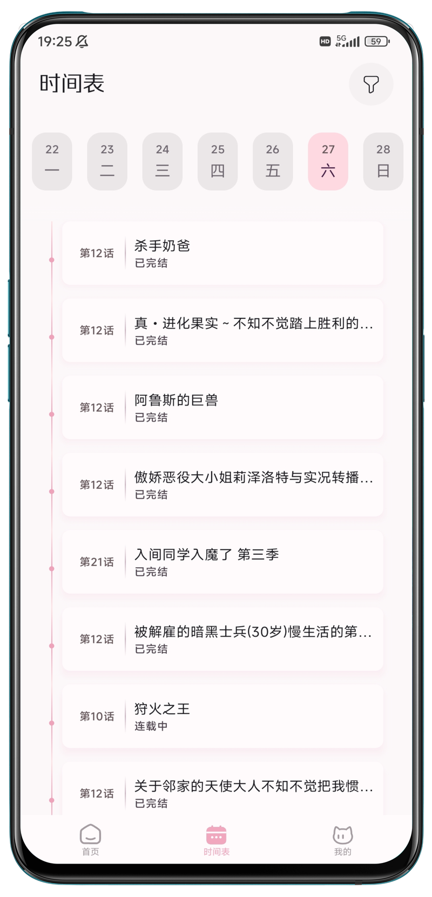

我换过七款动漫播放 App，NekoAnime 这套思路确实不一样
同类工具里 NekoAnime 不是功能最杂的，但它在"追番日常"这件事上的节奏感设计，让我用了大半年没再换。这篇把它放进坐标系里说清楚好在哪儿、取舍在哪儿。
换过七款动漫播放应用之后，我已经不太在意谁的片库宣称最全、谁的播放器支持格式最多了——这些东西半年一换，谁家都能堆出来。真正留下的，是那些在「追番的日常」这件事上动过脑子的应用：早上打开先看什么、周几该补哪几集、上次看到第几分钟、下周想追什么——这些细碎的动线，决定了你能不能持续用下去。
NekoAnime官网就是我换过的第七款，也是目前用得最久的一款——从官方下载拿安装包装好就能用。它不是这个类目里功能最花哨的，甚至一开始我也没觉得它有什么特别。但用了两个月之后回头看，发现它在几个地方做得确实比同类要克制、要准确。

同类格局：大而全 vs 小而准
先说坐标系。目前动漫播放应用大致分三档思路：
第一档是聚合类，什么资源都抓进来，片库论百万级算，用户靠搜索找东西。这类适合明确知道自己要看什么的老玩家，但闲逛和发现能力很弱，首页堆着各种分类入口，点开哪个都没重点。
第二档是社区驱动型，番剧社区、弹幕、评论先行，播放反而是附属功能。社交属性拉满，但如果你只是想安静追番，那种密集的信息噪音反而分散注意力。
第三档就是 NekoAnime 走的路径——追番日常的工具化。它不做社区，不堆资源数字，核心目标只有一个：让追番这件事从「每天打开 App 找半天」变成「打开 → 扫一眼 → 点进去续播」的一分钟动线。这一档目前做得好的不多，大多在半路就往第一档或第二档靠了，想兼顾的结果就是两边都没做好。
它做对的几个地方
三条找番路，分工不打架
同类应用的找番逻辑大多是「搜索 + 分类」两条路，有的再加一个热门榜单。NekoAnime 单独把时间表拎出来当第三条路，而且三条路的定位切得非常清楚：
- 搜索解决「我知道要看什么」的场景——朋友安利了、弹幕里看到了、回忆小时候看过某部，直接搜名字就命中，从输入到点开播放通常不超过十秒。
- 分类解决「我不知道想看什么但有偏好」的场景——想找治愈系、想补国漫、想翻老番，分类页按类型、地区、年份多维筛选，闲逛的时候经常有意外收获，这是搜索永远给不了的乐趣。
- 时间表解决「我追着好几部新番，想知道今天该补哪集」的场景——按星期排布更新排期，一周七天每天更什么一眼看清，追新番的用户可以把它当成每周的追番日程表。
这三条路没有重叠，各司其职。我见过太多应用把时间表塞在首页某个角落当附属模块，NekoAnime 直接给了它一级页面的地位——这是懂追番用户才会做的事。追新番的人真的会翻时间表，而且每周翻好几次。

观看历史 + 进度记忆：续播这件事真的不用想
很多应用都有观看历史，但做得像 NekoAnime 这么无缝的不多。两件事叠在一起才是完整的追番状态：
观看历史是自动维护的看片流水——看过哪部、哪一集、什么时候看的，全部自动记录，不需要手动操作。进度记忆精确到集内：每一集看到第几分几秒，播放器记着，下次点开同一集直接从那个位置继续，不用手动拖进度条。
两者配合起来的效果是：历史告诉你看过什么，进度负责从哪继续。追番列表、历史、进度三者叠起来，整个追番状态就闭环了。我同时追四五部不同进度的番，切来切去完全不会乱——这是我对这款应用最满意的功能，没有之一。
很多同类应用要么只做历史不做进度记忆，要么进度只精确到集不精确到时间点，结果就是每次续播都要手动拖半天。
离线优先的数据策略：关掉 App 再开，内容不会丢
NekoAnime 采用的是「离线优先」的技术方案——应用会自动缓存已拉取的数据，哪怕网络波动或临时断网，首页和已加载的页面仍然能正常显示。这个细节在同类应用里不算普遍，大多数还是每次打开都实时请求，网一卡就转圈。
为这些优点付出了什么
有取舍。
首先是纯本地、无云同步。追番列表、观看历史、进度记忆全部只在本机存。换机、卸载或者数据源大切换，这些数据就跟着没了。隐私上是加分项——没有云端数据意味着不依赖账号体系，也没有隐私泄露的风险。但迁移确实麻烦，换机时需要手动想办法。同类应用里做了云同步的，要么要求注册账号，要么同步范围很有限。这是一个典型的取舍：你要隐私和简单，就别指望无缝迁移。
其次是不做社区。没有弹幕、没有评论区、没有用户互动功能。对一些人来说这是缺陷，对另一些人来说反而是优点。我个人追番时习惯安静看，不太需要弹幕互动，但如果你喜欢一边看一边刷评论，那 NekoAnime 肯定不是你的菜。
第三是数据源依赖。NekoAnime 的内容全部来自数据源的实时解析，数据源侧的稳定性直接决定了应用能不能用。虽然应用本身做了离线缓存兜底，但如果数据源挂了太久，首页刷新就会出问题。想排查数据源问题和进阶配置，可以去NekoAnime文档翻详细指南。这是它作为非官方应用的先天局限，目前没有根治办法。
选购结论
什么样的人适合 NekoAnime：
- 追着多部当季新番，每周需要明确的更新计划——时间表就是为你准备的；
- 同时追好几部不同进度的番，讨厌每次续播都要手动找进度；
- 喜欢安静看番、不需要弹幕和评论区；
- 换过好几款应用觉得都太复杂，想要一个「装上就能用」的工具。
什么样的人应该选别的：
- 习惯了云同步、不想在换机时手动迁移数据；
- 追番时一定要看弹幕、和同好互动；
- 只看一部两部番，不需要时间表和进度记忆的精密配合；
- 特别在意片库规模，就想找聚合最全的那种。
最后说一句明确的推荐：如果你是那种同时追着三五部新番、每周都要排更新计划的老追番用户，NekoAnime 大概率会成为你用得最久的那一个。 它不一定是功能最多的，但在追番日常的节奏这件事上，它比同类工具多走了半步——这半步在日复一日的使用里，差距会越来越明显。追番用累了想看看源码怎么实现时间表那套逻辑？GitHub上有完整工程，国内访问慢的话可以走Gitee镜像，同时在GitCode也留了一份。